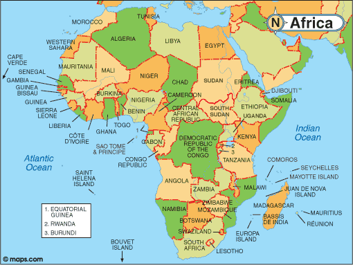

Africa is the world's second-largest and second-most-populous continent. At about 30.2 million km2 (11.7 million sq mi) including adjacent islands, it covers six percent of Earth's total surface area and 20.4 percent of its total land area. With 1.1 billion people as of 2013, it accounts for about 15% of the world's human population. The continent is surrounded by the Mediterranean Sea to the north, both the Suez Canal and the Red Sea along the Sinai Peninsula to the northeast, the Indian Ocean to the southeast, and the Atlantic Ocean to the west. The continent includes Madagascar and various archipelagos. It has 54 fully recognized sovereign states (or countries), nine territories and two de facto independent states with limited or no recognition.
